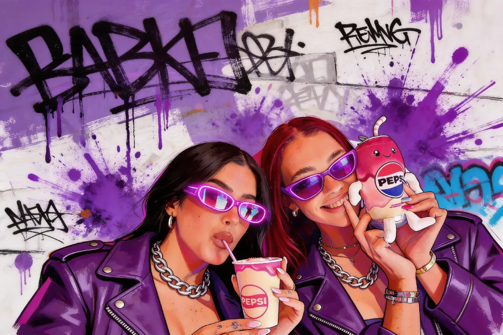
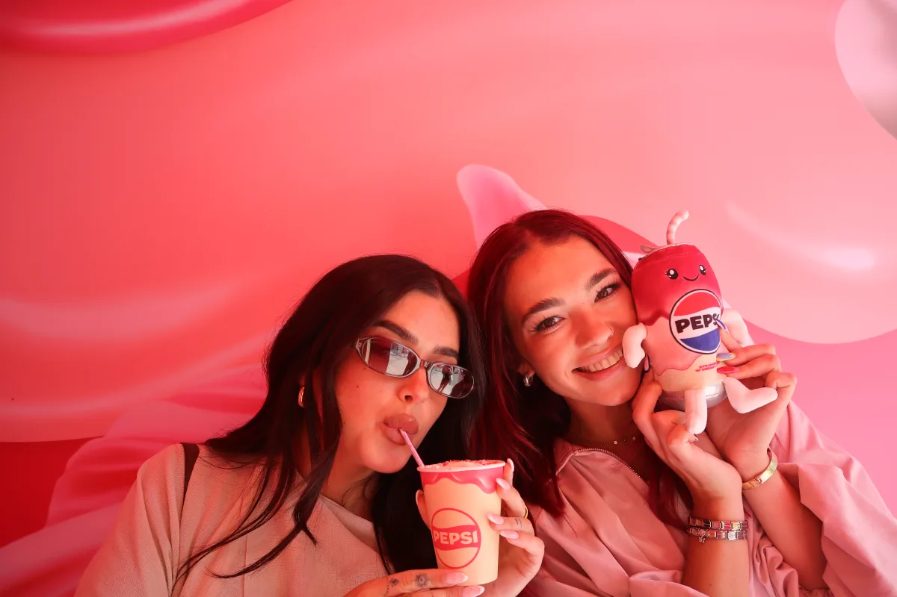
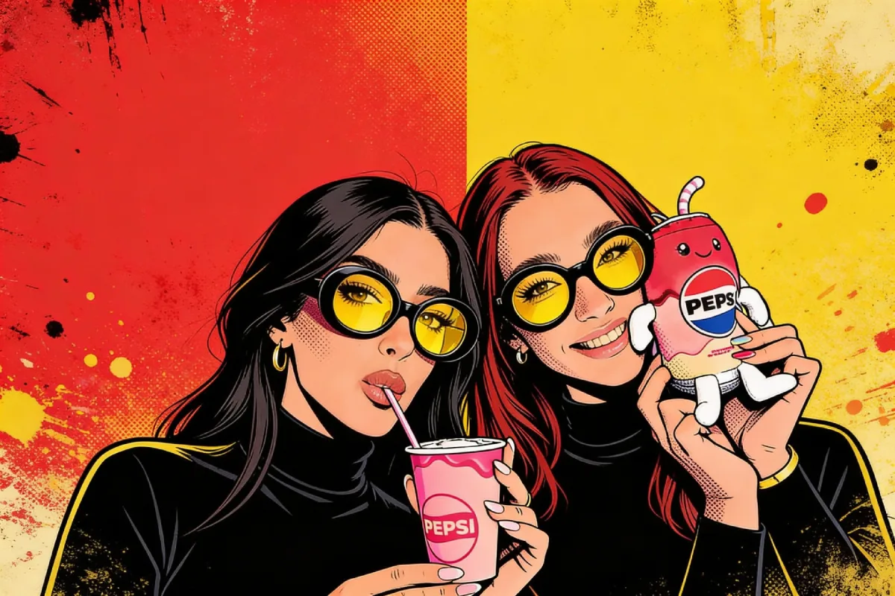
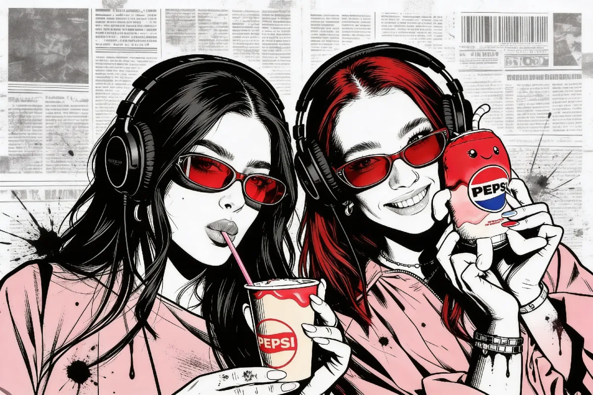
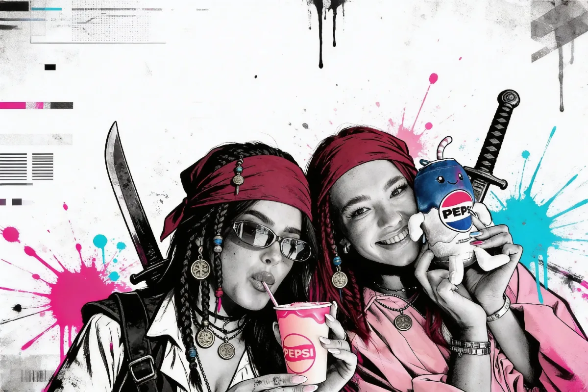

June 16, 2026
An AI photo booth turns your guests into branded content creators — it takes a normal photo and reimagines it in your brand’s world, then hands the guest a finished, shareable image they actually want to post. For a corporate event or brand activation, that means on-brand media generated at the event itself, by the very people you want talking about you. We’ve delivered booths for brands including Meta, LinkedIn and the Guaranteed Irish Business Awards, and the AI booth is the one marketing teams ask us about most.
A standard AI booth starts from €900, with corporate and branded activations sitting higher depending on the custom AI styling, branding and data capture you need. Below we’ll walk through exactly why these booths earn their keep at corporate events, the activation use cases they suit, how the branding and lead capture actually work, and how to measure whether it was worth it.

A regular photo booth gives people a nice keepsake. An AI booth gives your marketing team something it can rarely buy: genuine earned media, made on the spot. When a guest sees themselves rendered as a piece of street art in your campaign colours, or dropped into a generated scene that matches your launch, they post it — not because you asked them to, but because the image is good. That post carries your branding, your hashtag and your overlay out to their network, which is exactly the audience a B2B brand wants to reach.
There are four jobs an AI booth quietly does all night:
If you want the full picture of how the technology works and what it produces, our AI photo booth hire page covers the booth itself, and our deep-dive on the AI photo booth in Ireland explains the styles and the kit behind them.
The AI booth flexes to suit very different corporate briefs. These are the formats we’re booked for most often:
This is the part that separates a corporate AI booth from a novelty one. The AI doesn’t have to use generic filters — we tune the styling to your brand so the output looks like it came from your campaign team, not a stock effect.
Here is the same photo straight out of the booth, then restyled four different ways — each render takes seconds, and every look can be themed to a brand:




If your brief is more about heavy logo placement and a clean, predictable look than AI transformation, it’s worth comparing against a fully branded photo booth hire setup — sometimes the right answer is a branded open-air booth, and we’ll tell you so.
For a B2B activation, the photos are only half the value — the other half is knowing who came to your stand. The AI booth can capture leads cleanly, but it has to be done properly, with consent at the centre.
We’ll always frame the consent step with you in advance rather than guess — the wording is your call as data controller, and we build the booth flow to match it. Our booths run on BoothLedger, the photo-booth software we built and maintain in-house, which is what lets us tailor that capture-and-delivery flow precisely instead of relying on a locked-down third-party app.
A booth that can’t be measured is hard to re-book. The good news is an AI activation produces clear numbers. After the event we can report on:
Put those next to the hire cost and the maths usually speaks for itself, especially when you weigh the consented content library against what an agency photo shoot for the same volume of usable assets would cost.
The AI booth isn’t always the right answer, and we’d rather steer you to the booth that fits the brief. Here’s how we think about it.
Choose the AI booth when the goal is shareable, novel content and standout at a crowded event — a launch, a flagship stand, an experiential pop-up where you want people stopping and posting. The transformation is the hook, and the output is unique enough to travel further than a standard photo.
Choose a branded open-air booth when you want high throughput, a clean, predictable, heavily logoed print and a lower price point — great for awards nights and large dinners where you want to photograph hundreds of guests fast. A 360 booth wins when you want a premium video moment for social rather than a still image. We lay out the full range, including these options side by side, on our corporate photo booth hire page and in our guide to corporate event photo booths, so you can match the booth to the outcome you’re actually after.
An AI activation is straightforward to host once you know what it needs. A few practicals:
An AI photo booth starts from €900. That base price is fully inclusive — delivery, professional setup and pack-down, a trained attendant for the full hire, a custom overlay with your branding, a digital online gallery and collection are all in. The only standard extra is a small travel supplement for venues far from our Dublin and Athlone hubs, shown up front in your quote.
Corporate and branded activations sit higher than the base, depending on the depth of custom AI styling, the branding work, the data-capture flow and whether you need extra hours of live operation (charged at a reduced per-hour rate). Multi-day exhibitions and multi-booth bookings attract discounts, and booking more than six months out earns an early-booking discount of around 10–15%. For a full breakdown of what drives the number up or down, see our guide to AI photo booth cost in Ireland.
Yes. They turn guests into branded content creators, generating shareable on-brand images at the event itself. That drives earned media as people post to their own networks, pulls footfall at exhibition stands, and leaves your marketing team with a library of reusable, consented content. The novelty also gives sales a natural reason to start conversations.
Absolutely. We tune the AI style transfer to your brand colours and aesthetic, generate backgrounds that drop guests into your campaign world, and add branded start screens, overlays, frames and your hashtag to every image. The output looks like it came from your campaign team, not a generic filter.
Yes, on an opt-in basis. Guests choose to receive their image by email, SMS or QR code, and that delivery step is the natural moment to capture a consented contact detail. We build the flow to be GDPR-aware, with clear consent wording you control as data controller, and the contacts export cleanly for your CRM.
We’ve delivered booths for brands including Meta, LinkedIn and the Guaranteed Irish Business Awards, alongside corporate evenings at venues such as the Conrad Dublin. Across weddings and events we’ve run booths at over 2,500 events in total.
An AI photo booth starts from €900, fully inclusive of delivery, setup, a trained attendant, branding overlay, online gallery and collection. Branded corporate activations sit higher depending on custom AI styling, branding and data capture, with discounts for multi-day exhibitions and multi-booth bookings.
For bespoke AI styles, generated backgrounds and branded screens we like several weeks’ lead time, and more for large campaigns. The design and testing of a custom look takes time, so the earlier you book, the more refined and on-brand the result will be.
If you’re planning a launch, a stand, an awards night or an experiential activation and you want media your guests are proud to post, an AI booth is hard to beat. Tell us the brief — the brand, the goal, the venue and the date — and we’ll design the AI styling around it and quote it clearly. Start with our corporate photo booth hire options, then get in touch and we’ll build the right activation for your event.